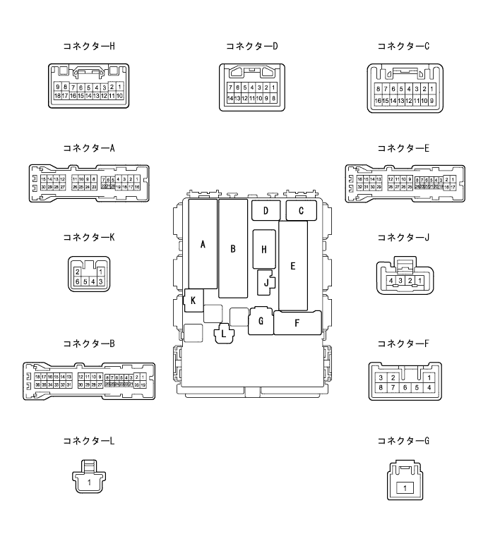

Inspect Main Body ECU


Disconnect the main body ECU (instrument panel junction block assembly) connector to be inspected.
Using SST (Toyota electrical tester), measure the voltage and resistance of the vehicle side wire harness connector.
- SST
- 09082-00030 09083-00170
- Specified Condition
Tester Connection (Terminal Symbol) Condition Standard U1 (AM1) ←→ Body ground Always 11 to 14V U4 (GND2) ←→ Body ground Always Below 1 Ω V6 (AM2) ←→ Body ground Always 11 to 14V